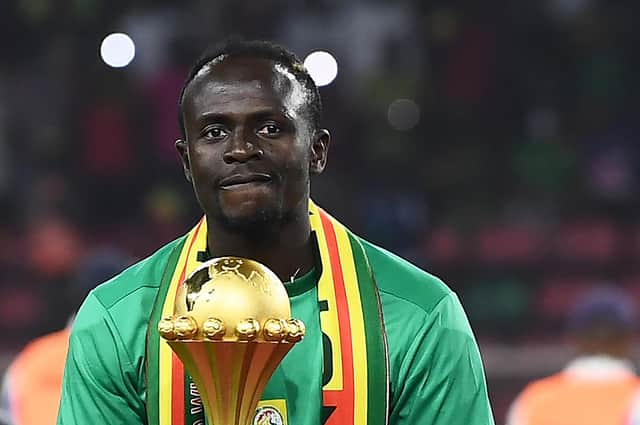

|  | Sadio Mané est un joueur de football sénégalais né le 10 avril 1992 dans le village de Bambali, près de Sédhiou. Il évolue au poste d'ailier et d'avant-centre au Bayern Munich. Il est considéré actuellement comme l'un des meilleurs joueurs au monde et sans doute le meilleur joueur de l'histoire de l'Équipe du Sénégal de football. Il est réputé pour ses dribbles, sa vitesse, sa technique et sa vision du jeu. En 2009, il intégrait l'AS Génération Foot où il fut rapidement repéré par le club partenaire du FC Metz. Il signe son premier contrat professionnel avec le club français au début de l'année 2012. La même année, son équipe est reléguée et Mané part pour le Red Bull Salzbourg. Avec Liverpool, après être parvenu en finale en 2018, il remporte la Ligue des champions en 2019. Il termine co-meilleur buteur du Championnat d'Angleterre en 2019 (22 buts), remporte la Supercoupe de l'UEFA 2019 et la Coupe du monde des clubs de la FIFA 2019, ce qui lui vaut d'être sacré joueur africain de l'année 2019. En 2020, il gagne le Championnat d'Angleterre. Il remporte de nouveau le titre de joueur africain de l'année en 2022. Sur le plan international, Mané débute avec l'équipe du Sénégal en 2012. Il prend ensuite part aux Jeux olympiques de 2012. Après plusieurs échecs dans les compétitions, les Sénégalais sont finalistes de la CAN 2019 et vainqueurs en 2022. Le joueur sénégalais atteint la quatrième place du classement du ballon d'or 2019 derrière Cristiano Ronaldo, son coéquipier du Liverpool FC Virgil van Dijk et Lionel Messi. Lors de la cérémonie ballon d'or 2022, il atteint le meilleur classement pour un joueur africain depuis George Weah, qui a reçu le trophée en 1995. Il est le premier footballeur à détenir le trophée Prix Sócrates, prix récompensant un sportif pour ses œuvres et son engagement. |